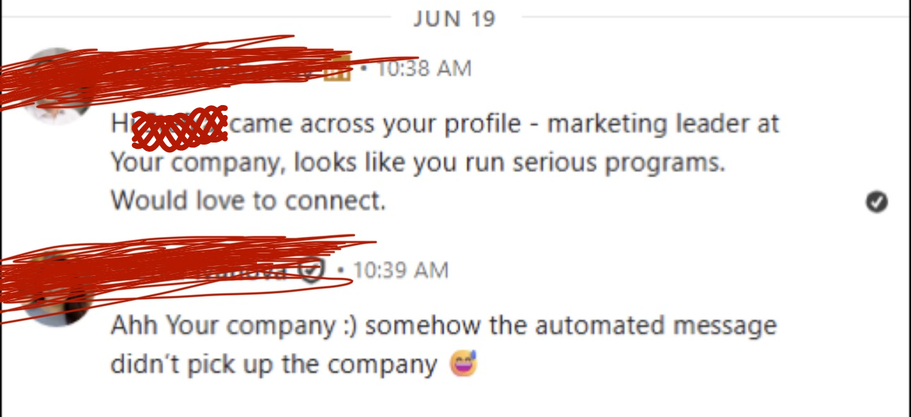
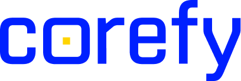
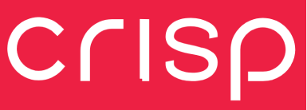

Зустрічі із західними покупцями, які вже знають, хто ви
Нетворк, видимість, розсилка руками
Додаємо у ваш LinkedIn тих, хто ухвалює рішення у ваших цільових компаніях. Робимо так, щоб вони кілька разів побачили ваше імʼя. Потім пишемо кожному особисто, а теплих лідів передаємо вашим продажам.
Продукт сильний. Але західні покупці не відповідають
«Наші потенційні клієнти нас не бачать»
Можна регулярно писати в LinkedIn і все одно залишатися всередині української бульбашки: вас читають колеги, друзі та інші люди з вашого ринку.
Ми будуємо нетворк навколо тих, кому ви продаєте: додаємо потенційних клієнтів, взаємодіємо з ними й робимо так, щоб контент потрапляв не тільки до своїх.
«Ми пишемо клієнтам, але вони не відповідають»
Для людини з іншого боку це ще одне повідомлення від незнайомої компанії.
Тому ми не починаємо з DM. Спочатку потенційний клієнт кілька разів бачить вас у стрічці, ваші думки, кейси та імʼя. І вже потім отримує повідомлення.
Так outreach перестає бути єдиною точкою контакту.
«Ми пробували LinkedIn своїми силами. Не полетіло»
Бо окремий пост, 100 нових конектів чи місяць outreach — це ще не воронка.
Потрібні одночасно правильні люди в нетворку, контент для них, регулярна взаємодія, outreach і follow-up.
Ми збираємо це в один процес і ведемо його постійно.
«Їдемо на конференцію. Треба домовитися про зустрічі»
Не починаємо писати учасникам за пʼять днів до івенту.
Заздалегідь знаходимо ваших потенційних клієнтів, додаємо їх у LinkedIn, починаємо комунікацію, домовляємося про зустрічі й повертаємося до контактів після події.
Якщо впізнали тут свою ситуацію — ось як ми це робимо ↓
Автоматизовану розсилку видно з першого рядка

Інструмент бере інформацію із профілю, вставляє у шаблон — і стається помилка. Він не бачить контексту, пише не тим людям і не ухвалює рішень ситуативно.
Тому ми персоналізуємо всі переписки й пишемо кожному руками. У світі, де всі перейшли на ШІ, це помітно одразу, і саме тому на такі повідомлення відповідають.
Щоб виділитися, потрібно писати як жива людина. Як це працює ↓
Від незнайомця до клієнта — три кроки
Знайомимось
Додаємо у ваш LinkedIn людей, які ухвалюють рішення у ваших цільових компаніях.
Стаємо своїми
Ми публікуємо пости від вашого CEO, ми коментуємо пости ваших потенційних клієнтів. Вони щотижня бачать ваше імʼя.
Пишемо
Коли вас уже знають, пишемо кожному особисто. Зацікавлених передаємо вашим продажам.
741 теплий лід для одного клієнта
І це не виняток. Ще пʼять клієнтів: від 644 до 7 209 підписників і від 10 до 93 теплих лідів, за період від шести місяців до шести років.




86 кваліфікованих зустрічей на міжнародній конференції
Ціль була 100: ми свідомо поставили її високо, бо частина зустрічей завжди зривається вже на самій конференції. Один клієнт, три амбасадори, підготовка за два місяці до події.
Будуємо базу
Знаходимо людей, які там будуть, і починаємо розмови без навʼязування зустрічей.
Підтверджуємо участь
«Ви будете на конференції?» Більшість відповідає «ще не знаю». Люди підтверджують пізно.
Вікно конверсії
Теплі розмови стають слотами. Коли команда приземляється, розклад уже повний.
4 362 запити на конект · 4 876 розпочатих розмов. Яка ваша наступна конференція?
Поговорити про конференцію →Спрацює, якщо це про вас
- Ви українська B2B-компанія і продаєте або хочете продавати у Британії, ЄС чи США.
- У вас уже є продукт, клієнти і хтось, хто веде продажі. Нам є кому передавати зустрічі.
- Засновник або CEO готовий стати обличчям компанії в LinkedIn. Писати за нього будемо ми.
- Ви готові дати системі 90 днів, а не чекати лідів наступного тижня.
- Вам потрібні сотні лідів уже цього місяця.
- Ви шукаєте масову автоматизовану розсилку.
Якщо щось зліва не про вас, ми скажемо про це чесно ще на першому дзвінку.
Три способи отримувати клієнтів з LinkedIn
Outreach System
Спершу пайплайн, без контенту. Оптимізація профілю, пошук ICP, запити на конект, тепла розсилка і MQL щомісяця.
Social Selling System
Пайплайн плюс видимість. Усе з Outreach, плюс коментарі під постами вашої аудиторії, щоб вас знали ще до першого повідомлення.
Demand Generation System
Механізм цілком. Розсилка, видимість і пости голосом вашого CEO. Корпоративна сторінка включена.
Усі Системи — мінімум 90 днів, далі помісячно без штрафів. Уся тарифна сітка →
Не готові до щомісячного комітменту? Почніть з чогось одного
Аудит LinkedIn
За один профіль. Завершується планом дій, який ваша команда може виконати сама.
Conference Sprint
Прогрів мережі, розсилка в LinkedIn і застосунку конференції, координація зустрічей на місці та добивання контактів після.
Умови для всіх: Системи — мінімум 90 днів, далі помісячно без штрафів · вихід із попередженням за 30 днів
Один 30-хвилинний дзвінок. Без презентацій
Наприкінці ви знатимете, чи варте це вашого часу. А якщо не варте — принаймні знатимете, що не так із вашим пошуком.
Або напишіть на alex@content-chameleon.com